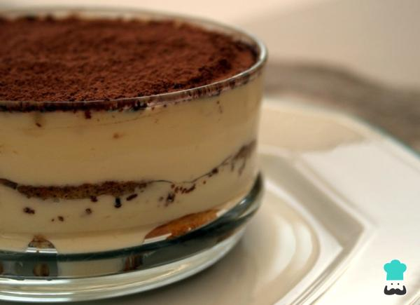

Son muchas las recetas que podemos elaborar de tiramisú, de frambuesa, de mango, de chocolate y naranja, de Nutella... Sin embargo, en esta ocasión, hemos preferido optar por el tiramisú tradicional, de café y queso Mascarpone. Así pues, de la mano de La cuchara de Plata, a continuación mostramos los ingredientes y los pasos para preparar este sencillo y exquisito tiramisú, ¡no te lo pierdas!
Lo primero que debes hacer para poder ponerte manos a la obra cuando antes es dejar listos todos los ingredientes. Para darle un toque especial al tiramisú, mezclaremos el café con un buen chorro de Amaretto.
Ahora sí, ¡empezamos! Cogemos un bol y mezclamos las yemas de huevo con el azúcar glass hasta integrar por completo.
Cogemos otro recipiente y batimos las claras a punto de nieve.
Retomamos el bol donde mezclamos las yemas con el azúcar e incorporamos el queso Mascarpone, mezclamos bien. Una vez incorporado, añadimos las claras a punto de nieve poco a poco y las integramos realizando movimientos lentos de abajo hacia arriba.
Cogemos la fuente o molde donde tenemos previsto elaborar el tiramisú casero y empezamos a montarlo. Para ello, colocamos una capa de bizcochos de soletilla en el fondo, previamente bañados en la mezcla de café y Amaretto.
Luego, añadimos una buena capa de la mezcla de yemas, claras, queso Mascarpone y azúcar. Espolvoreamos de forma uniforme el chocolate rallado y volvemos a colocar otra capa de bizcochos empapados en café.
Para finalizar el tiramisú casero, colocamos otra capa de crema y espolvoreamos una buena cantidad de cacao en polvo.
Podéis hacer vuestro tiramisú en un molde más o grande o en fuentes individuales, o añadir más o menos capas de bizcochos, aunque, para mi gusto, dos capas es más que suficiente. Reservamos el tiramisú en el frigorífico durante 12-24 horas para que cuaje bien y esté perfecto.
Pasado el tiempo de reposo, ya podemos retirarlo de la nevera y empezar a devorarlo.